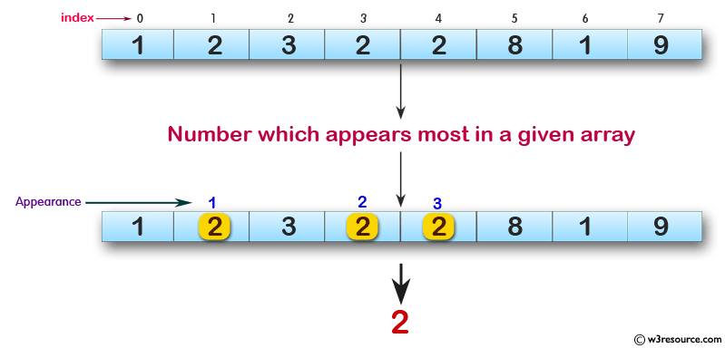

Escriba un programa JavaScript para encontrar el número que aparece más en un arreglo dado de números enteros.
R:94
Nota. Si en el arreglo hay dos números con igual número máximo de ocurrencias, el número con menor index será el escogido.
Descripción gráfica del Ejercicio.
